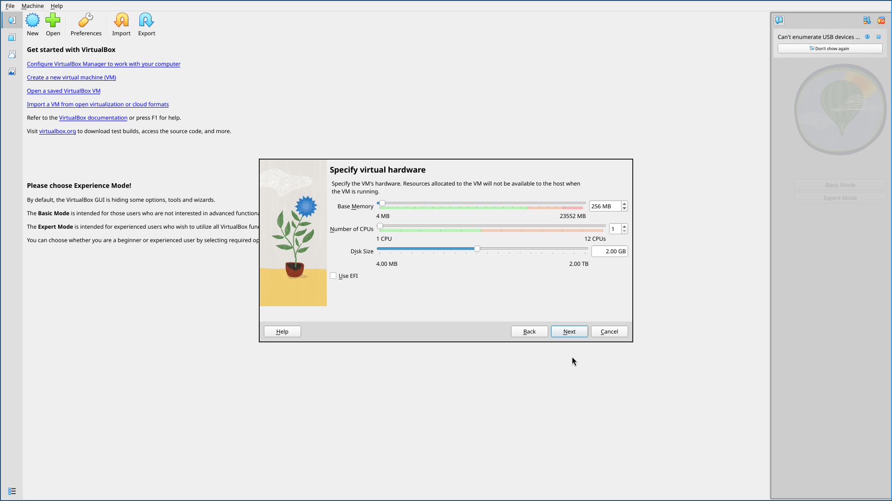
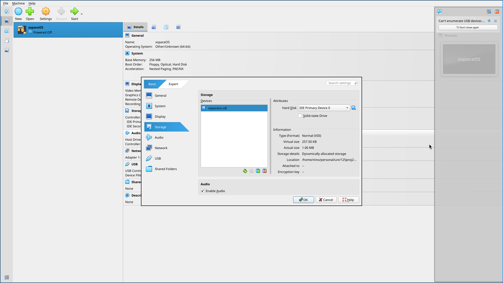
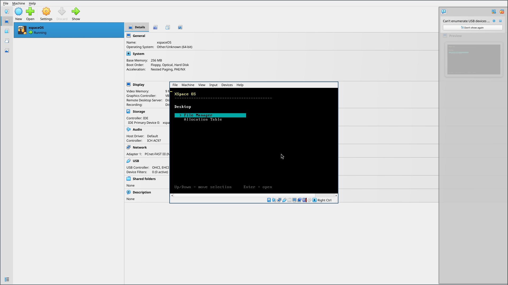
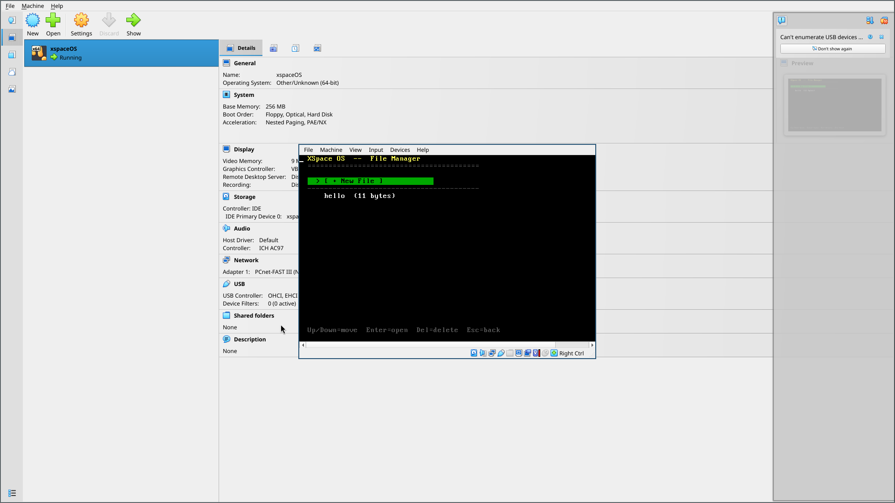
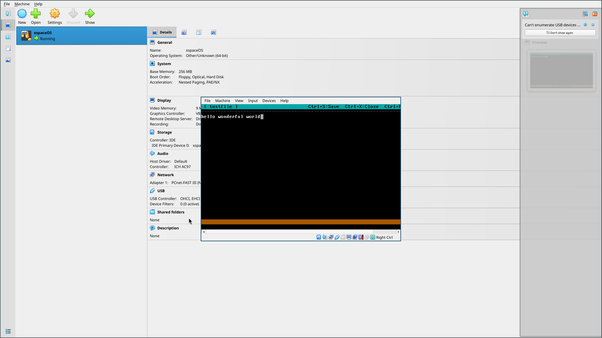
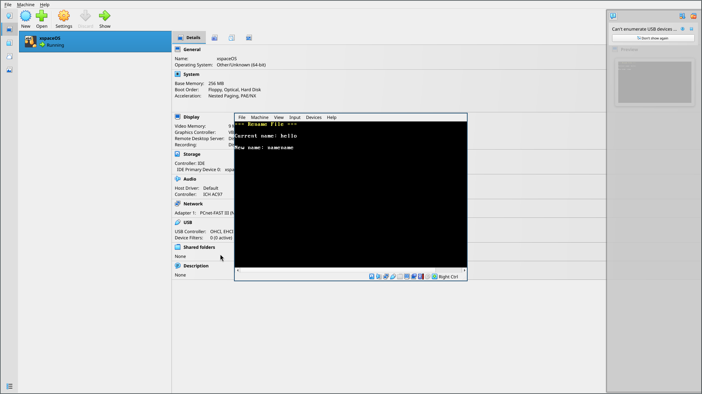
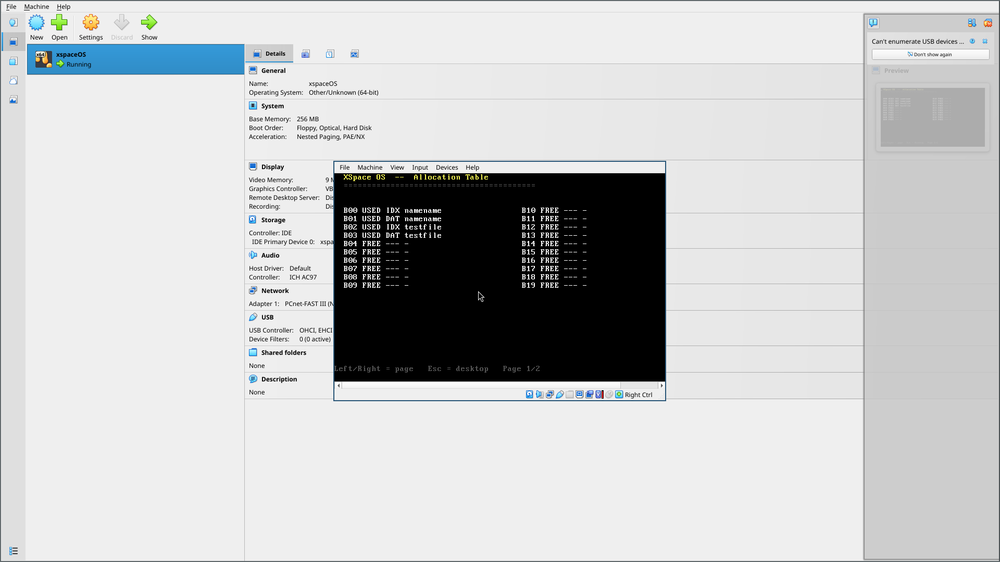

HoneyOs User Manual
By Whitexpace
Members:
- Guarin, Nicolete Rein
- Legaspo, Jed Lordy
- Pagaran, Niño Christian
- Solis, Glen
Table of Contents
- I. Introduction and Scope
- II. Requirements and Project Setup
- III. Build and Boot Procedures
- IV. Desktop and Application Navigation
- V. File Editing Workflow
- VI. Allocation Table and File System Model
- VII. Keyboard Reference
- VIII. Troubleshooting
- IX. Demonstration Flow
I. Introduction and Scope
HoneyOs is a small Rust operating system kernel that boots directly in a virtual machine. It uses VGA text mode for screen output and a polled PS/2 keyboard driver for input.
This manual describes the features implemented in the current repository. The details were checked against src/main.rs, src/shell.rs, src/keyboard.rs, src/fs.rs, .cargo/config.toml, and scripts/build-virtualbox-disk.sh.
Important: the current file system is stored in RAM only. Files are lost when the virtual machine is restarted, reset, or powered off.
Current Capabilities
The current build includes:
- a keyboard-driven desktop
- a
File Managerapp - an
Allocation Tableapp - text file creation
- text file opening and editing
- file saving through
Ctrl+S - file renaming through
Ctrl+R - file deletion from the file manager
- cursor movement inside the editor
- Caps Lock and Shift support for text entry
- a simulated indexed-allocation file system
Current Boundaries
The current build does not include:
- persistent disk storage for user-created files
- mouse support
- multitasking
- a graphical window system
- an installer ISO
II. Requirements and Project Setup
Host Tools
Install these tools on the host computer before building the OS:
- Rust and Cargo through
rustup - a nightly Rust toolchain
- the
rust-srccomponent - the
llvm-tools-previewcomponent bootimage- QEMU tools
- VirtualBox, if the generated VDI will be run in VirtualBox
Check the installed tools with:
rustup --version
cargo --version
qemu-img --version
VBoxManage --versionRust Toolchain Setup
Run this setup once from the project root:
rustup toolchain install nightly
rustup override set nightly
rustup component add rust-src llvm-tools-preview
cargo install bootimageThis project requires nightly Rust because .cargo/config.toml uses a custom bare-metal target and build-std.
Project Root
Use the project root folder, meaning the folder that contains Cargo.toml, Cargo.lock, src/, docs/, and scripts/.
Move into that folder before running build commands:
cd path/to/project-rootReplace path/to/project-root with the actual project location on the computer being used.
III. Build and Boot Procedures
Build the Kernel
To compile the kernel:
cargo buildTo create the bootable raw disk image:
cargo bootimageThe raw image is created at:
target/x86_64-honeyos/debug/bootimage-honeyos.binBuild the VirtualBox Disk
To create the VirtualBox disk image, use the helper script:
./scripts/build-virtualbox-disk.shThe script runs cargo bootimage, then converts the raw image into:
honeyos.vdiRun with QEMU
QEMU is the reference environment for this project.
From the project root, run:
cargo runCargo uses the configured bootimage runner, which starts QEMU with the generated boot image.
Manual QEMU command:
qemu-system-x86_64 -drive format=raw,file=target/x86_64-honeyos/debug/bootimage-honeyos.binCreate the VirtualBox Machine
HoneyOs does not use an ISO installer. In VirtualBox, boot from the generated honeyos.vdi disk instead.
- Open VirtualBox.
- Click
New. - Use a VM name such as
HoneyOs. - Leave the ISO image field empty.
- Set
OStoOther. - Set
OS VersiontoOther/Unknown (64-bit). - Continue to the hardware screen.
Create the VM without an ISO image and use an Other/Unknown (64-bit) guest type.
Configure Virtual Hardware
Recommended VM settings:
- Base Memory:
128 MBminimum;256 MBis fine - CPUs:
1 - EFI: disabled
- Boot mode: legacy BIOS

Caption: Keep Use EFI unchecked. The current boot image expects legacy BIOS boot.
VirtualBox may ask for a virtual hard disk size during VM creation. It is fine to finish the wizard, because the generated honeyos.vdi will be attached in the next step.
Attach honeyos.vdi
After building the VDI with ./scripts/build-virtualbox-disk.sh:
- Select the VM in VirtualBox.
- Open
Settings. - Open
Storage. - Remove any temporary blank disk if VirtualBox created one.
- Attach
honeyos.vdias the VM hard disk. - Save the settings.

Caption: Attach the generated honeyos.vdi file as the VM's hard disk.
Boot the OS
Start the VM. A successful boot shows the HoneyOs desktop.

Caption: The desktop shows the File Manager and Allocation Table apps.
IV. Desktop and Application Navigation
Desktop Screen
The desktop is the first screen after boot.
Desktop controls:
| Key | Action |
|---|---|
Up / Down |
Move the highlighted selection. |
Enter |
Open the selected app. |
Available apps:
| App | Purpose |
|---|---|
File Manager |
Create, open, edit, rename, and delete files. |
Allocation Table |
Inspect simulated file allocation blocks. |
File Manager Screen
Open File Manager from the desktop by leaving it highlighted and pressing Enter.
The file manager shows:
[ + New File ]at the top- existing files below it
- each file's current size in bytes

Caption: The file manager lists files and shows each file's byte count.
File manager controls:
| Key | Action |
|---|---|
Up / Down |
Move the highlighted selection. |
Enter on [ + New File ] |
Start creating a new file. |
Enter on a file |
Open that file in the editor. |
Delete on a file |
Delete the selected file immediately. |
Esc |
Return to the desktop. |
There is no confirmation prompt before deleting a file. Because the file system is currently in memory only, deleted files cannot be recovered.
V. File Editing Workflow
Create a File
- Open
File Manager. - Highlight
[ + New File ]. - Press
Enter. - Type the file name at the
File name:prompt. - Press
Enter.
If the name is accepted, the editor opens automatically for the new file.
File name rules:
- the name cannot be empty
- the name cannot be longer than
32bytes - the name cannot match an existing file
The OS reports an error if the file table is full or the name already exists. If an empty name is entered, the OS returns to the file manager without creating a file.
Open a File
- Open
File Manager. - Highlight the file name.
- Press
Enter.
There is no separate read-only viewer. Files are opened in the editor.
Edit Text
The editor is a full-screen text editor. It shows:
- the current file name in the top bar
- editor shortcuts in the top bar
- file contents in the main area
- saved/unsaved status in the bottom bar
- current size out of the
512byte limit CAPSin the bottom bar when Caps Lock is enabled

Caption: The editor supports typing, cursor movement, deletion, saving, closing, and renaming.
Editor controls:
| Key | Action |
|---|---|
| Printable keys | Insert text at the cursor. |
Enter |
Insert a newline. |
Backspace |
Delete the character before the cursor. |
Delete |
Delete the character at the cursor. |
Left / Right |
Move the cursor one character left or right. |
Up / Down |
Move through visual editor rows. |
Home |
Move to the start of the current visual row. |
End |
Move to the end of the current visual row. |
PageUp / PageDown |
Move up or down by one visible editor page. |
Ctrl+S |
Save the file. |
Ctrl+R |
Rename the file. |
Ctrl+X |
Close the editor and return to the file manager. |
Save before closing. Ctrl+X does not ask whether unsaved changes should be kept.
Save a File
Press Ctrl+S inside the editor.
When saving succeeds, the bottom status bar changes to Saved. Editing after that changes the status back to Unsaved.
The editor stops accepting more text after the file reaches 512 bytes.
Rename a File
- Open the file in the editor.
- Press
Ctrl+R. - Type the new name at the
New name:prompt. - Press
Enter.

Caption: Renaming is done from inside the editor.
Rename rules:
- the new name cannot be empty
- the new name cannot be longer than
32bytes - the new name cannot match an existing file
Renaming changes only the file name. It does not change the file contents or the file's allocated data blocks.
Delete a File
- Open
File Manager. - Highlight the file.
- Press
Delete.
The selected file is removed immediately. Its index block and data blocks are returned to the free block pool.
VI. Allocation Table and File System Model
Allocation Table Screen
Open Allocation Table from the desktop to inspect the simulated file allocation state.
The table displays block entries in two columns. Each row contains:
- block number, such as
B00 - state:
USEDorFREE - block type:
IDX,DAT, or--- - owner file name, if the block is used

Caption: A file uses one IDX block and one or more DAT blocks after content is saved.
Allocation table controls:
| Key | Action |
|---|---|
Left / Right |
Move between allocation-table pages. |
Esc |
Return to the desktop. |
The current file system has 40 simulated blocks, so the allocation table has two pages of 20 blocks each.
Indexed Allocation Model
HoneyOs currently uses a fixed-size, in-memory file system. It is designed for a small no_std kernel, so it does not require heap allocation.
Storage model:
- files are kept in kernel RAM
- each file reserves one index block when created
- file contents are split into
128byte data blocks when saved - each file can own up to four data blocks
- deleting a file frees its index block and data blocks
- saving a file replaces its previous data-block allocation
After deleting a file, its blocks become FREE again:
File System Limits
Current limits:
| Limit | Value |
|---|---|
| Maximum files | 8 |
| Maximum file name length | 32 bytes |
| Maximum file content length | 512 bytes |
| Block size | 128 bytes |
| Maximum data blocks per file | 4 |
| Index blocks per file | 1 |
| Total simulated blocks | 40 |
| Persistence | None; RAM only |
What this means for users:
- Empty files still use one index block.
- A saved file with 1 to 128 bytes uses one data block.
- A saved file with 129 to 256 bytes uses two data blocks.
- A saved file with 257 to 384 bytes uses three data blocks.
- A saved file with 385 to 512 bytes uses four data blocks.
- Files disappear after reboot or power off.
VII. Keyboard Reference
Text input supports standard US keyboard scancode set 1 behavior for the keys implemented by the current driver.
Supported behavior:
- letters, numbers, spaces, and common punctuation
Shiftfor uppercase lettersCaps Lockfor alphabetic capitalizationShiftwith the number row, such as!,@,#,$,%,^,&,*,
(, and )
Shiftwith punctuation, such as_,+,{,},|,:,",~,
<, >, and ?
- left and right arrow keys
Home,End,PageUp,PageDownBackspace,Delete,Enter, andEscCtrl+S,Ctrl+R, andCtrl+Xin the editor
Notes:
- Caps Lock affects letters only.
- Holding Shift while Caps Lock is active types lowercase letters.
- Unsupported key combinations are ignored.
- The OS does not use mouse input.
VIII. Troubleshooting
cargo build reports build-std or target errors
Make sure nightly Rust is active and the required components are installed:
rustup override set nightly
rustup component add rust-src llvm-tools-previewcargo bootimage is not found
Install bootimage:
cargo install bootimageqemu-img is not found
Install QEMU tools, then verify:
qemu-img --versionVirtualBox asks for an ISO
Do not select an ISO. HoneyOs boots from honeyos.vdi.
Use this process:
- Create the VM without installation media.
- Finish the VM wizard.
- Open
Settings > Storage. - Attach
honeyos.vdias the hard disk.
VirtualBox does not boot the OS
Check the following:
honeyos.vdiexists in the project root- the VDI was rebuilt after the latest code changes
- the VDI is attached as the VM hard disk
- EFI is disabled
- the VM type is a 64-bit
Other/Unknownstyle guest - the raw image boots with QEMU
If QEMU boots but VirtualBox does not, use QEMU for the demo. QEMU is the reference platform for this project.
Files disappear after restarting
This is expected in the current implementation. The file system is in memory only and does not write user files to the VDI.
IX. Demonstration Flow
Use this short flow for a clean demonstration:
- Build the VDI with
./scripts/build-virtualbox-disk.sh. - Start the VirtualBox VM.
- Open
File Manager. - Create a file named
notes.txt. - Type:
HoneyOs demo file
Created inside the OS editor
Files are currently RAM-only- Press
Ctrl+Sto save. - Press
Ctrl+Rand rename the file tomanual.txt. - Press
Ctrl+Xto return to the file manager. - Confirm the renamed file appears with its byte count.
- Press
Escto return to the desktop. - Open
Allocation Table. - Show the
IDXblock andDATblock entries for the file.
This demonstrates booting, file management, editing, saving, renaming, and indexed allocation inspection.